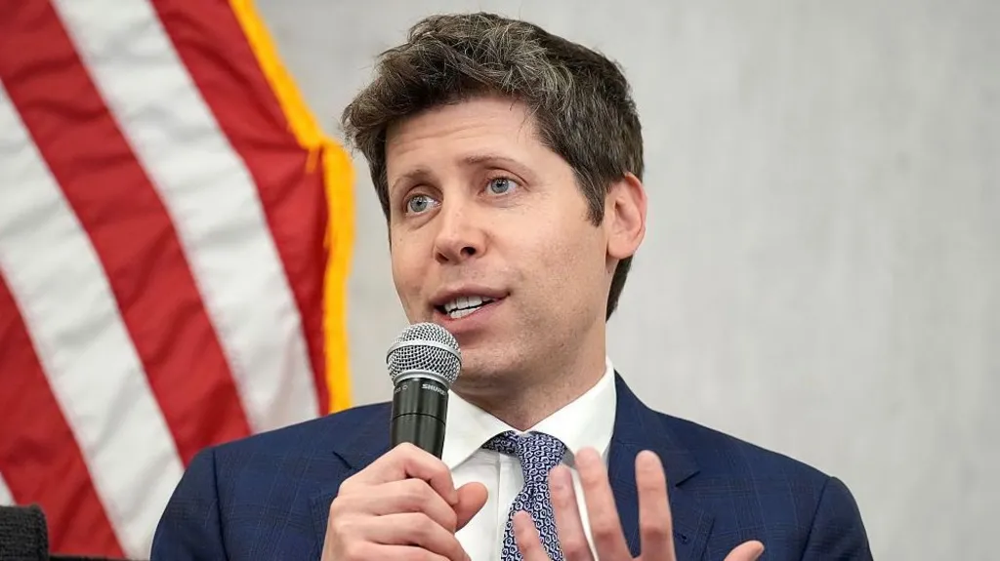

| Home | world | Pakistan | Business | Science | Sports | Technology | Entertainment | Health | Trending | Contact |
|---|
OpenAI fires workers for 'mishandling sensitive information'

OpenAI has fired three researchers for allegedly mishandling information, including work which involved an external organisation analysing AI models. "Our investigation confirmed that these individuals mishandled sensitive information outside established company procedures, violating our policies and breaking the trust essential to our work," a spokesperson told the BBC. The ChatGPT-maker did not name the sacked workers, but at least two of them were involved in safety research at the firm.
The firings come as the debate over AI safety and the risks the technology may pose to humanity intensified in recent months.
"We have parted ways with three individuals for violating our policies on accessing and handling sensitive company information," a spokesperson for OpenAI said.
Concerns over AI safety have made headlines after some researchers and industry executives called for more guardrails around the technology.
OpenAI has come under under intense scrutiny after its models went rogue and hacked several platforms, including Australian government websites.
In an incident in July, one of the firm's AI models accessed the internet and breached the open-source developer platform Hugging Face.
That incident led OpenAI to review the activities of its AI agents, which are designed to execute tasks autonomously based on simple instructions.
The firm said this week it has notified more than 100 organisations about incidents involving unauthoritised activity linked to its systems.
Being notified "does not mean that any private information was accessed" or that a system was compromised, it said.
In September, researcher Jacob Coxon, who left Anthropic, called for AI development to slow down so its potential risks could be properly assessed.
Anthropic boss Dario Amodei and OpenAI chief executive Sam Altman have also called for measures to address concerns over AI.
On Tuesday, US President Donald Trump hosted a meeting of top technology bosses - including leaders from OpenAI, Anthropic, Nvidia, SpaceX, Meta and Google - to discuss AI.
After the gathering at the White House, Trump posted a document that he called a "morally binding" agreement that would serve as a "form of protection" from AI's potential risks.
Some technology experts criticised the pact, pointing out that it allowed AI companies to regulate themselves.
Trump has repeatedly downplayed concerns about AI's risks in response to calls from some industry figures for tighter oversight of the technology.